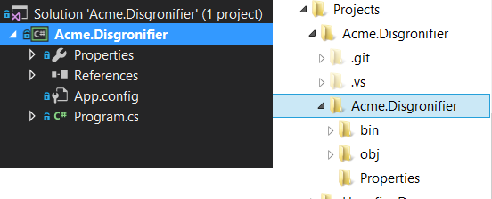
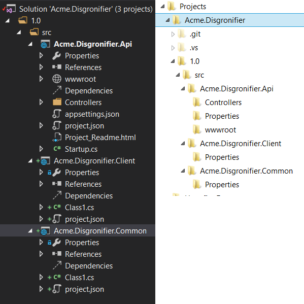
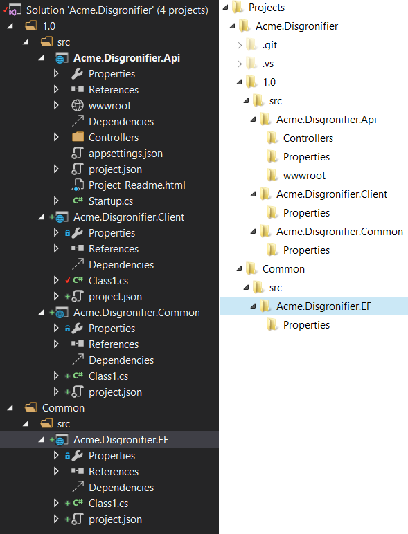
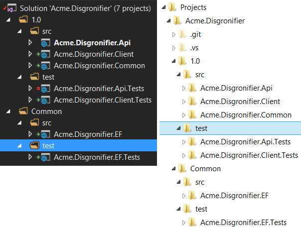

Adventures with MVC 6 - Episode I : Setting up my solution structure
Having worked on several Web API projects in the past, I've observed a pattern that worked really well for the teams with which I've worked.
When making a new MVC 6 project that'll serve primarily as an API/Service, I'll create a solution with versioning in mind. I'll first create a project (it doesn't really matter what kind of project) called something like Acme.Disgronifier where Acme is the company name/acronym and Disgronifier is the service/API title.
- Open Visual Studio 2015
- Click File-<New-<Project...
- Verify that the Location value is wherever your source control is currently mapped if you are using TFS
- In the Project Name type Acme.Disgronifier, Click OK.
The solution will look something like this:
Then I remove the project from the solution because it was really just there to get the correct solution and folder name (right click the project in Solution Explorer, click Remove). You can also delete it from the hard drive too. Next I add in a solution folder 1.0/src.
- Right click the solution in Solution Explorer, click Add-< New Solution Folder
- Type 1.0, hit [Enter]
- Right Click 1.0, click Add-<New Solution Folder
- Type src, hit [Enter]
In the 1.0/src folder I add another project named Acme.Disgronifier.Api, this time it's specifically a web project using the ASP.NET Web Application template. I'll add two more projects to the 1.0 folder, this time Class (Package) projects, Acme.Disgronifier.Client and Acme.Disgronifier.Common. The Acme.Disgronifier.Common project will hold those classes that both the API and the Client both reference, like DTO classes.
- Add Api project
- Right click the 1.0/src folder in Solution Explorer, click Add-<New Project
- Select ASP.Net Web Application
- In the Name field, enter Acme.Disgronifier.Api
- Make sure the location ends with Acme.Disgronifier\1.0\src
- Click OK
- Select Web API under ASP.NET Templates
- Click OK
- Add Client project
- Right click the 1.0/src folder in Solution Explorer, click Add-<New Project
- Select Class Library (Package)
- In the Name field, enter Acme.Disgronifier.Client
- Make sure the location ends with Acme.Disgronifier\1.0\src
- Click OK
- Add Common project
- Right click the 1.0/src folder in Solution Explorer, click Add-<New Project
- Select Class Library (Package)
- In the Name field, enter Acme.Disgronifier.Common
- Make sure the location ends with Acme.Disgronifier\1.0\src
- Click OK
At this point, the solution should look like this:
The point of the API project is to serve as a service/business layer application between the UI and DB layers. The endpoints it defines should be considered contractual. Non-.Net application may interface with them. If a breaking change must occur, you should add a new 2.0 folder to the solution and create a new API for this breaking change. You can read more about Restful API versioning here. When this occurs, I remind the business that it is in their best interest to deprecate the older version as soon as possible because maintaining both versions costs us time in development.
The point of the Client project is to serve as a simple proxy with perhaps a little business knowledge. It mainly exists to make .Net developer's lives easier so that they don't have to know the specifics of the API routes, verbs, etc. just to do things like CRUD operations on some DTO exposed by the API.
The Common project exists to hold those classes that exist in common between the Client and API projects. I'm usually storing DTO classes in this project.
Both the Common and Client projects will be distributed to other projects as Nuget packages. If time permits, I will blog about that later.
Additionally, I need projects that interface with those parts of the business that can't be versioned. Projects like this might be database layer projects or other Disgronifier-centric projects that cannot be versioned. Of all the projects I've ever worked on, we've only ever had one instance of the database in any particular environment, so there was never any Database 2.0 to communicate with. If someone added or removed a column, APIs 1.0 and 2.0 all had to adapt to handle this new schema. It's this kind of cross-version common code for which I'm creating a project. I add a new folder to the solution, Common/src.
- Right click the solution in Solution Explorer, click Add-< New Solution Folder
- Type Common, hit [Enter]
- Right Click Common, click Add-<New Solution Folder
- Type src, hit [Enter]
Then I add a new project for my database layer, Acme.Disgronifier.EF.
- Right click the Common/src folder in Solution Explorer, click Add-<New Project
- Select Class Library (Package)
- In the Name field, enter Acme.Disgronifier.EF
- Make sure the location ends with Acme.Disgronifier\Common\src
- Click OK
At this point the solution should look like this:
It might also be clear based on the name that I plan on using the Entity Framework in my Acme.Disgronifier.EF project. I do. I may get into the specifics of how to set that project up in a later blog post.
Now, I strongly advocate that every developer practice TDD. So before I write a single line of code, I want to have my test projects in place. I go ahead and add test projects to my solution at this point.
- Right click the 1.0 folder in Solution Explorer, click Add-< New Solution Folder
- Type test, hit [Enter]
- Right Click Common, click Add-<New Solution Folder
- Type test, hit [Enter]
- Right click 1.0/test, click Add-<New Project...
- Select xUnit Test Project (DNX) (under Visual C#/Web)
- In the Name field, enter Acme.Disgronifier.Api.Tests
- Make sure the location ends with Acme.Disgronifier\1.0\test
- Click OK
- Right click 1.0/test, click Add-<New Project...
- Select xUnit Test Project (DNX) (under Visual C#/Web)
- In the Name field, enter Acme.Disgronifier.Client.Tests
- Make sure the location ends with Acme.Disgronifier\1.0\test
- Click OK
- Right click Common/test, click Add-<New Project...
- Select xUnit Test Project (DNX) (under Visual C#/Web)
- In the Name field, enter Acme.Disgronifier.EF.Tests
- Make sure the location ends with Acme.Disgronifier\Common\test
- Click OK
At this point your solution should look like:
I might have added a Acme.Disgronifier.Common.Tests project, but I'm not going to unless I actually find myself putting logic in that library, which I rarely do. I always try to hold off on adding projects/code unless I can determine that I actually will need them.
DNX projects don't yet have MS Test support which is certainly curious. Thankfully the xUnit team has stepped up and filled that gap, and learning to use xUnit isn't too bad of a learning curve. That is why I write to create xUnit test projects.
At this point, my solution is mostly set. I now need to tweak my projects.
- Set my projects to reference each other
- Set Acme.Disgronifier.Api references
- Right click the Acme.Disgronifier.Api project, click Add-<Reference...
- Check Acme.Disgronifier.Common
- Check Acme.Disgronifier.EF
- Click OK
- Set Acme.Disgronifier.Client references
- Right click the Acme.Disgronifier.Client project, click Add-<Reference...
- Check Acme.Disgronifier.Common
- Click OK
- Set Acme.Disgronifier.Api.Tests references
- Right click the Acme.Disgronifier.Api.Tests project, click Add-<Reference...
- Check Acme.Disgronifier.Api
- Click OK
- Set Acme.Disgronifier.Client.Tests references
- Right click the Acme.Disgronifier.Client.Tests project, click Add-<Reference...
- Check Acme.Disgronifier.Client
- Click OK
- Set Acme.Disgronifier.EF.Tests references
- Right click the Acme.Disgronifier.EF.Tests project, click Add-<Reference...
- Check Acme.Disgronifier.EF
- Click OK
- Set Acme.Disgronifier.Api references
- Set project frameworks
- Set Acme.Disgronifier.Client frameworks
- Double click the project.json file in the Acme.Disgronifier.Client project
- Remove the whole "dotnet5.4" section
- Save the file
- Set Acme.Disgronifier.Common frameworks
- Double click the project.json file in the Acme.Disgronifier.Common project
- Remove the whole "dotnet5.4" section
- Save the file
- Set Acme.Disgronifier.Api frameworks
- Double click the project.json file in the Acme.Disgronifier.Api project
- Remove the whole "dnxcore50" section
- Save the file
- Set Acme.Disgronifier.Api.Tests frameworks
- Double click the project.json file in the Acme.Disgronifier.Api.Tests project
- Remove the whole "dnxcore50" section
- Save the file
- Set Acme.Disgronifier.Client.Tests frameworks
- Double click the project.json file in the Acme.Disgronifier.Client.Tests project
- Remove the whole "dnxcore50" section
- Save the file
- Set Acme.Disgronifier.Client frameworks
- Add Nuget packages
- Right click the solution and click Manage NuGet Packages for Solution
- Click Browse
- Make sure that the package source is set to NuGet.org
- Add Moq to test projects
- In the search box type Moq and select Moq by Daniel Cazzulino
- Check Acme.Disgronifier.Api.Tests
- Check Acme.Disgronifier.Client.Tests
- Check Acme.Disgronifier.EF.Tests
- Click Install
- Click OK
- Add FluentAssertions to test projects
- In the search box type FluentAssertions and select FluentAssertions
- Check Acme.Disgronifier.Api.Tests
- Check Acme.Disgronifier.Client.Tests
- Check Acme.Disgronifier.EF.Tests
- Click Install
- Click OK
- Make internal classes in projects under test visible to test projects
- Add InternalsVisibleTo to Api project
- Right click Acme.Disgronifier.Api project in the Solution Explorer, click Add-<Class...
- Type AssemblyInfo and click Add
- Delete all the text of the pre-generated file
- Type 'using System.Runtime.CompilerServices;' at the top of the file
- Drop a line and type '[assembly: InternalsVisibleTo("Acme.Disgronifier.EF.Tests")]
- Drop a line and type '[assembly: InternalsVisibleTo("DynamicProxyGenAssembly2")]
- Save the file
- Drag the file to the project's Properties folder
- Add InternalsVisibleTo to Client project
- Right click Acme.Disgronifier.Client project in the Solution Explorer, click Add-<Class...
- Type AssemblyInfo and click Add
- Delete all the text of the pre-generated file
- Type 'using System.Runtime.CompilerServices;' at the top of the file
- Drop a line and type '[assembly: InternalsVisibleTo("Acme.Disgronifier.EF.Tests")]
- Drop a line and type '[assembly: InternalsVisibleTo("DynamicProxyGenAssembly2")]
- Save the file
- Drag the file to the project's Properties folder
- Add InternalsVisibleTo to EF project
- Right click Acme.Disgronifier.EF project in the Solution Explorer, click Add-<Class...
- Type AssemblyInfo and click Add
- Delete all the text of the pre-generated file
- Type 'using System.Runtime.CompilerServices;' at the top of the file
- Drop a line and type '[assembly: InternalsVisbibleTo("Acme.Disgronifier.EF.Tests")]
- Drop a line and type '[assembly: InternalsVisbibleTo("DynamicProxyGenAssembly2")]
- Save the file
- Drag the file to the project's Properties folder
- Add InternalsVisibleTo to Api project
Removing support for "dotnet5.4" and "dnxcore50" is optional, but I've found it much more convenient to do that than to support it of late. There are too many libraries I depend on (e.g. Automapper) that just don't support dotnet5.4 yet.
There is a good chance that you see an error instructing you to run "dnu restore" on something after modifying these project.json files. If you see that, you can resolve it be individually selecting each project in Solution Explorer, right clicking the project, and clicking Restore Packages.
I add FluentAssertions to every test project to help improve the readability of m test assertions. I add Moq to all my test projects because I inevitably need to mock/stub/fake classes in the projects under test.
The InternalsVisibleTo lines help a test project see classes/properties/methods that are necessary for the process of testing, but are not intended for general use outside of the library. This may not initially be clear why this is helpful, but if you practice TDD for a little while, you'll find that separation of concerns and the single responsibility principle will cause you to break up classes to make them easier to test. But you may still couple classes through internal constructor injection or setter injection if the classes are truly coupled. For example, I had written a "SprocketClient" class on one job, and within that SprocketClient I tested that the input data was properly formatted, transported to the server and the responses properly handled. Because the logic for the formatting was relatively complicated, I broke that logic out to a "SprocketRequestFormatter" class to be tested separately. There are any number of reasons that the format of the message could have changed (and it did over time), but the client logic remained pretty stable. For that reason the formatter warranted its own class and tests. The client was coupled to the formatter internally. No one outside of the library could hope to talk to the server in any format except the one the server was prepared to accept which was defined in the formatter class. But for the purposes of testing, I could substitute the formatter with a stubbed version using the Moq framework to verify that the rest of the client class still behaved as expected. This may not initially make a lot of sense, but it's helpful if you stick with TDD.
At this point our solution is ready for feature additions. I'd check it into source control.